西部计划志愿者出发
独立完成现场镜头拍摄与全片剪辑，负责封面设计及发布优化；内容经江苏共青团微信视频号与B站发布。
工程与发布证明剪辑工程 / 官方账号发布页面点击查看完整证明 ＋
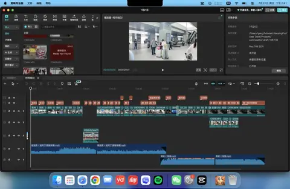
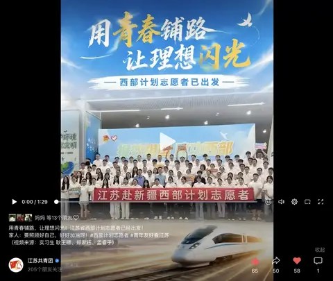
我是耿王璟，视觉传达设计专业。以政务新媒体实习为核心，将文字策划、视频制作、视觉设计与平台运营连接成完整内容链路。
新媒体运营｜2026.07—至今
工作定位
负责微信视频号、B站等平台的选题分析与运营维护，承担拍摄、视频剪辑、字幕、封面设计及发布优化；节点内容按官媒规范核验素材来源、字幕用语与画面表达。
视觉传达设计｜2027年毕业
专业前10%
Illustrator / Lightroom / 剪映
可立即到岗
完整成片、工程界面与官方发布入口集中呈现，点击即可核验。
独立完成现场镜头拍摄与全片剪辑，负责封面设计及发布优化；内容经江苏共青团微信视频号与B站发布。


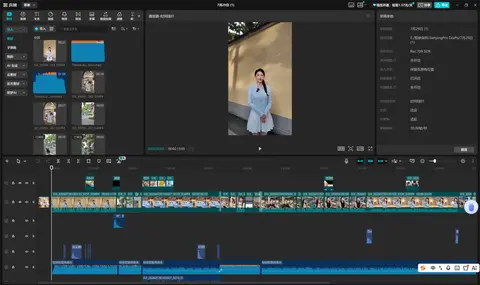
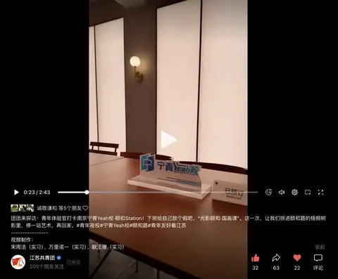
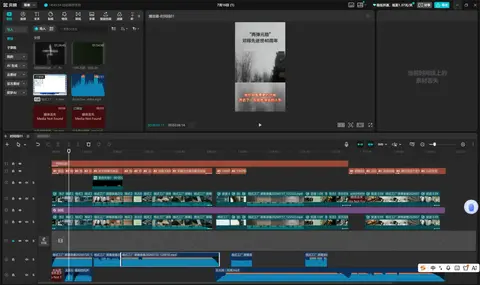
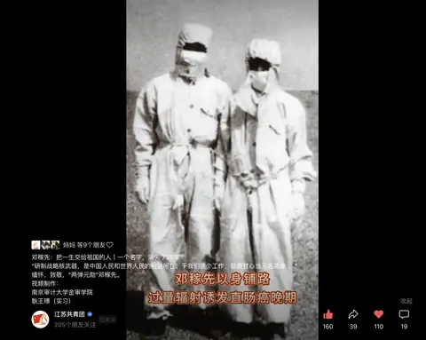
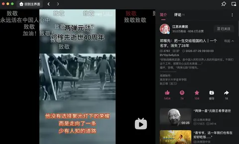
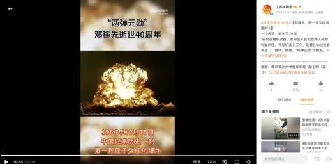
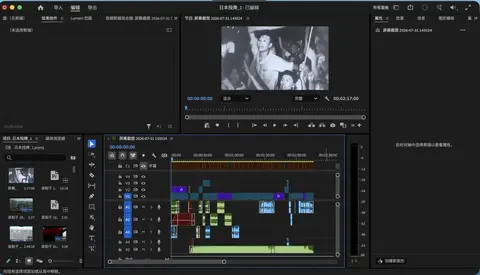
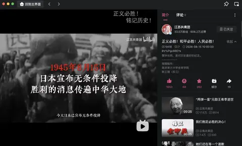
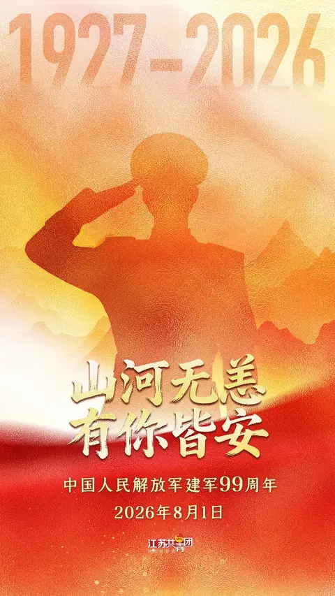
实习期间围绕纪念节点完成主视觉合成、信息层级、字体编排与官方发布尺寸适配；下方同时保留 Photoshop 工程界面和江苏共青团官方账号发布页面，便于核验完整创作链路。
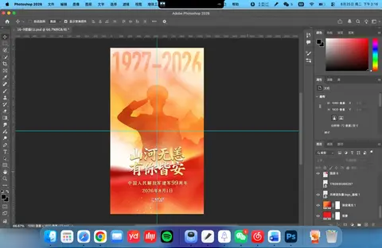
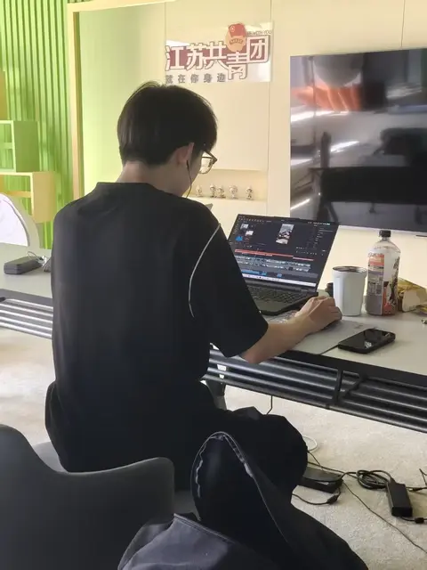
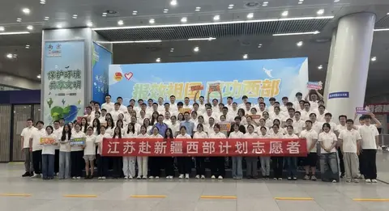
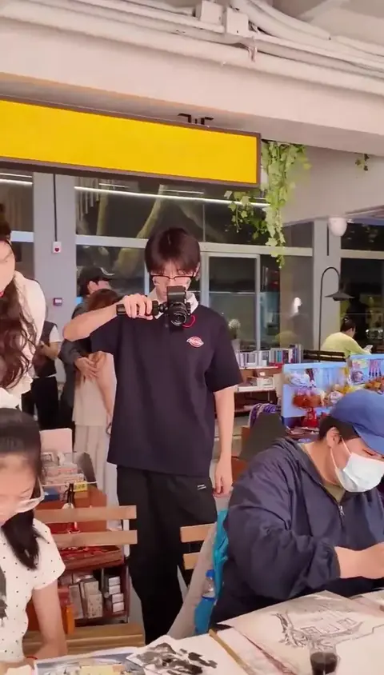
从采访、素材整理到成稿，署名和发布页面均可核验。
金审青年｜2026.08.04｜原创
围绕暑期实习实践组织人物与工作内容，以青年视角呈现从策划、拍摄到剪辑的成长过程。
文字：耿王璟 图片：耿王璟学校官网 / 中国网｜2026.05.29
记录心理健康特色活动，将现场信息、活动过程与社会价值整理为适合公开发布的图文稿件。
耿王璟/图 耿王璟/文以证书和官方名单对应姓名、作品与奖项，便于招聘方快速核验。
仅呈现姓名、作品及奖项能够准确对应的材料，便于招聘方快速确认。
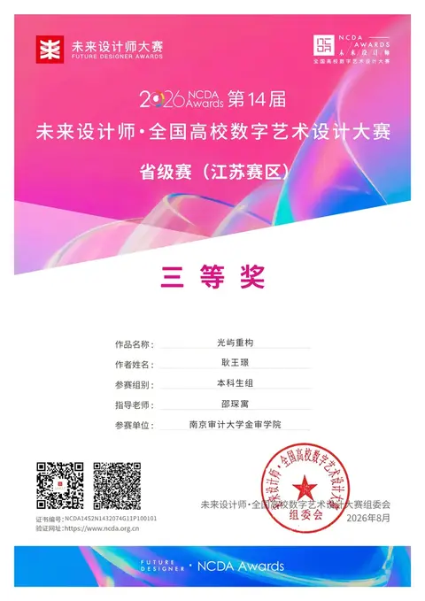
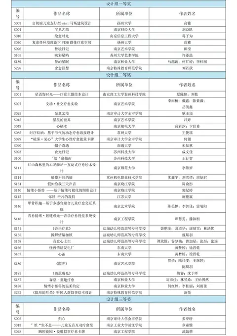
以完整案例板呈现规范、空间与应用，不拆成零散单页。
从标志规范延伸至服饰、户外广告、导视、车辆与随行用品，建立一致的户外品牌语言。
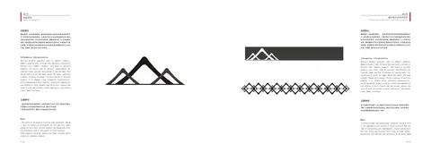
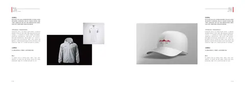
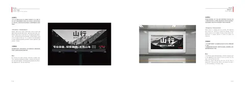
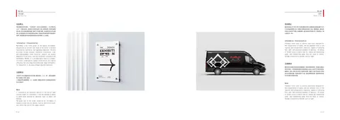
以克制的黑白灰和少量红色构建统一视觉场，覆盖品牌识别、宣传册、空间和服务流程。
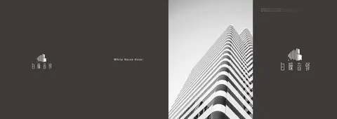
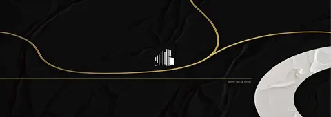
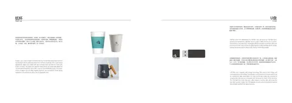
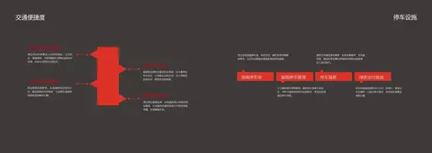
作品保留完整比例并成组呈现，集中展示视觉叙事与设计执行能力。
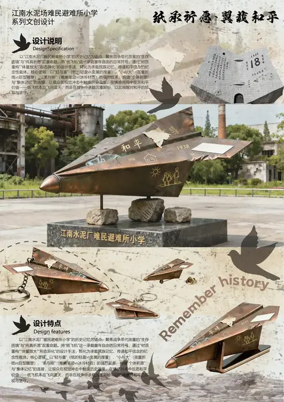